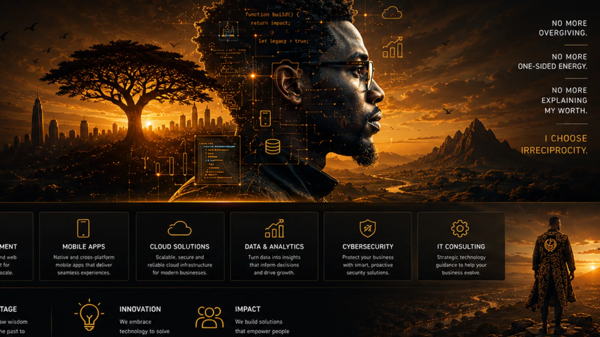
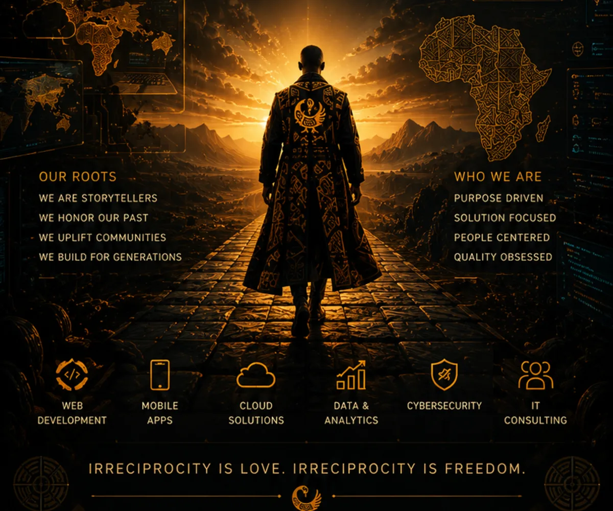
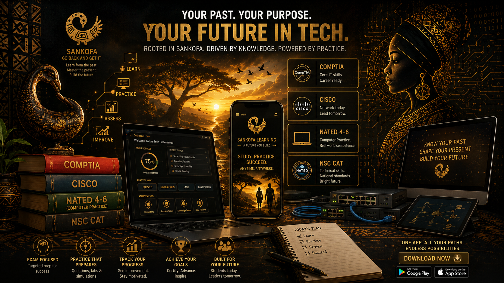
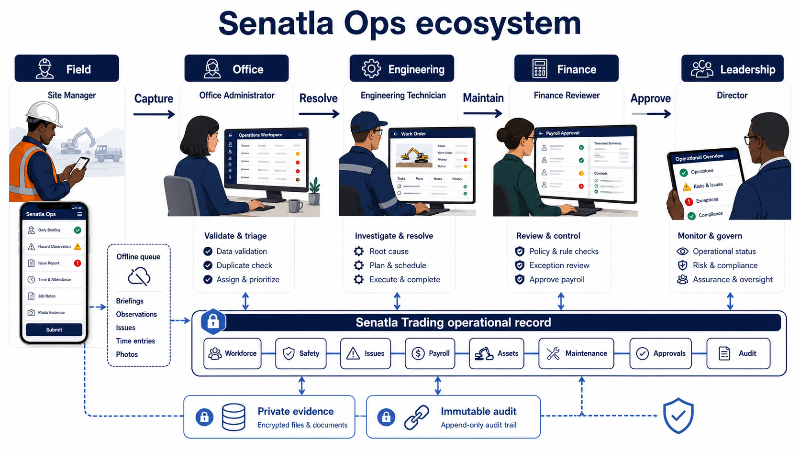
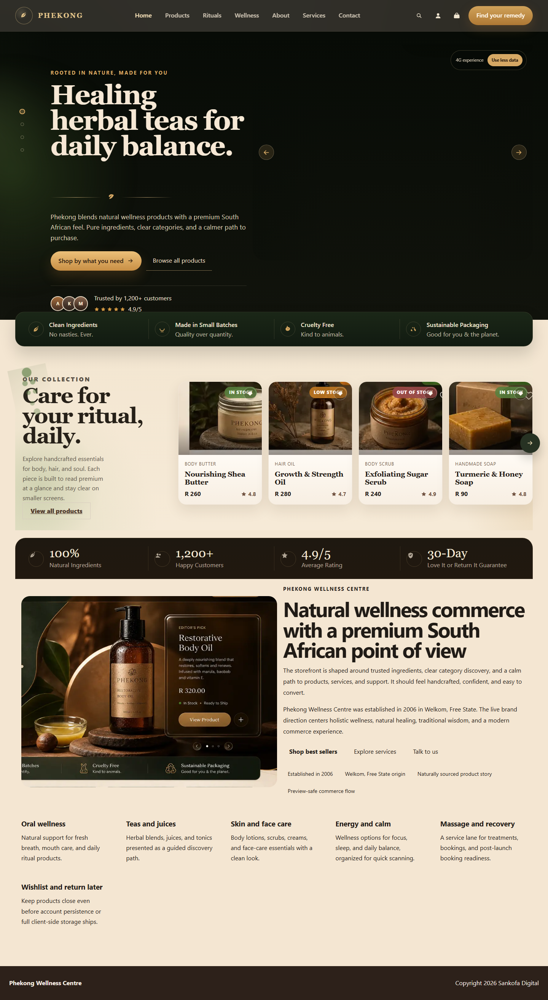

Map what happens today, who is affected and where decisions get stuck.
Sons of the Soil • Sovereign Code
Go back.
Build wisely.
Move forward.
"Se wo were fi na wosankofa a yenkyi" — It is not a taboo to return for what you forgot.
We help South African teams design and build practical digital products for the way work really happens: across people, processes, devices and constraints.

// Ancestral wisdom synthesized into modern resilient software
async function sankofaBuild(context: SoilHeritage) {
const ancestralLessons = await context.retrievePast();
const customArchitecture = new Engine({ noTemplates: true });
return customArchitecture.deployToAfrica(ancestralLessons);
}
[system] Interactive runtime initialized. Click "Run Build Engine" to execute custom logic.
Bespoke FrontendPure CSS & TypeScript
Source ownershipPortable foundations
African ContextBuilt for low connectivity
For teams doing important work
Start with the operating problem.
We help South African organisations turn unclear workflows, disconnected tools and high-friction customer journeys into focused digital products.
Choose a practical product boundary, delivery path and evidence standard.
Leave the team with working software, known limits and a useful next step.
Identity & Philosophy
We are not an aesthetic.
We are sons of the soil.
Too much software is designed for ideal conditions and then asked to carry the weight of real organisations: intermittent power, uneven connectivity and legacy institutional processes.
That is not who we are. We are indigenous African software engineers who understand both the soil we stand on and the mathematical rigor of high-performance distributed systems.
When we say Sankofa, we invoke an ancient Akan epistemological principle: knowledge must never be discarded simply because it is old, and modern systems must never be built blindly without honoring historical evidence.
The Sacred Anatomy of Sankofa
Akan Epistemology & Software Design
The Backward-Turned Head
Respect for existing workflows. Before writing a line of code, we investigate current paper records, informal workarounds, and user history.
The Precious Golden Egg
The core wisdom and value. We extract what worked historically in your organization and preserve it inside the new digital foundation.
The Forward-Facing Feet
Relentless forward execution. While our gaze evaluates the lessons of the past, our build momentum pushes forward into scalable modern technology.
Rooted in the Soil
Resilient under African operating conditions: low latency, offline-first data synchronization, role accountability, and robust security.
Engineering Authenticity
Purpose-built systems for real conditions
If a development agency sells you a bloated WordPress theme or generic template builder, they are middlemen. Here is why Sankofa Digital builds custom systems from the ground up:
Where generic approaches can struggle
When the fit is wrong
A standard tool can become expensive when the workflow, data boundaries or operating conditions do not match.
- ✕ More dependencies and configuration than the team can comfortably maintain.
- ✕ Workflow rules that sit outside the system and are hard to audit.
- ✕ Mobile, connectivity or accessibility needs added too late.
- ✕ Data and ownership questions left unclear at handover.
Sankofa Custom Engineering
Sovereign Custom Craft
Clean, hand-crafted architecture built specifically for your domain, users, and performance thresholds.
- ✓ Zero Bloat: Lightweight semantic HTML, custom CSS design system, and lightning-fast load times.
- ✓ Hardened Security: Role-based access control, cryptographic audit logs, and privacy governance.
- ✓ African Resilience: Designed for mobile use, constrained bandwidth and intermittent connectivity.
- ✓ Total Ownership: You own 100% of the source code, data schema, and deployment pipeline.
Distributed Architecture
Event-driven backends with PostgreSQL, Node.js, and high-concurrency microservices.
Offline-First Synchronization
IndexedDB and local caching that keeps field operations running during network blackouts.
Privacy-aware data governance
Strict South African privacy compliance built natively into schema boundaries.
Native Hardware Hooks
PWA and mobile integrations for cameras, GPS geofencing, and biometric authentication.
Solutions That Empower
Solutions that Empower
From idea to impact — we design, build and scale digital solutions that drive real results.
Web Development
Custom websites and web applications built for performance, resilience and scale.
Mobile Apps
Native and cross-platform mobile apps that deliver seamless, engaging experiences.
Cloud Solutions
Scalable, secure and reliable cloud infrastructure tailored for modern enterprise.
Data & Analytics
Turn data into actionable insights that inform decisions and drive continuous growth.
Cybersecurity
Protect your business with smart, proactive security architecture and auditing.
IT Consulting
Strategic technology guidance, problem discovery and roadmaps to help your business evolve.
Who We Are
Rooted in heritage.
Driven by purpose.
Sankofa is more than a name — it's a way of thinking. We honor our past, apply the lessons and create digital solutions that build a better future.
Heritage
We draw wisdom from the past to inform and elevate the future.
Innovation
We embrace modern technology to solve real-world problems.
Impact
We build solutions that empower people, organizations and communities.

Our Process
Built with Intention
A collaborative process designed to turn your ideas into powerful digital realities.
01. Discover
We listen, learn and deeply understand your goals, users and operational constraints.
02. Plan
We craft a clear strategy, architectural roadmap and evidence-based plan for success.
03. Build
We design and develop with precision, engineering excellence and rigorous review.
04. Launch
We deploy, support and help you grow and scale with absolute confidence.
Our Roots
- We are storytellers
- We honor our past
- We uplift communities
- We build for generations
Who We Are
- Purpose driven
- Solution focused
- People centered
- Quality obsessed
Featured Products
Selected systems and delivery evidence
Selected systems engineered for education, operations and commerce across South Africa.

Sankofa Computer Master Class
Guided NATED, CAT and industry-certification learning paths with lecturer controls, practice evidence and release checks.

Senatla Ops
A role-controlled operations system connecting field records, assets, approvals and audit evidence.

Phekong Commerce Platform
A mobile-aware commerce, booking and inventory experience built around a South African wellness brand.